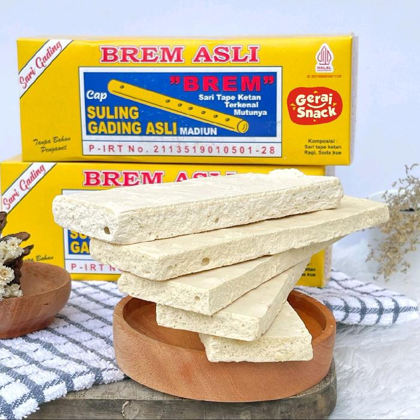

Pecel is a culinary icon of Madiun. This dish consists of various fresh vegetables served with a signature peanut sauce.
The taste is simple, fresh, and savory truly addictive.
Almost on every corner of Madiun, you can find pecel vendors with side dish variations such as fried tempeh, crispy rempeyek, or omelets.

Brem Madiun 🍬
Aside from pecel, Madiun is also famous for Brem a sweet snack made from fermented glutinous rice extract that is then dried.
Madiun’s brem has a unique texture: once it touches your mouth, it instantly melts, giving a refreshing cool, sweet-and-sour sensation.
This snackis a perfect choice as a signature souvenir from Madiun.